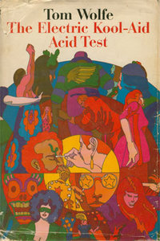

Order 1The Electric Kool-Aid Acid TestYear Published : 1968Goodreads PageGenre: NonFictionAuthor:Tom WolfeGoodreads Stars (out of 5) 3.92 Order 2The BookYear: 1966Goodreads PageGenre: Personal DevelopmentAuthor: Alan WattsGoodreads Stars4.27 Order 3The Sound and the FuryYear Published: 1929Goodreads PageGenre: Fiction Author: William FalknerGoodreads Stars3.86 Order 4On WritingYear Published: 2000Goodreads PageGenre: MemoirAuthor: Stephen KingGoodreads Stars4.3 Order 5SteppenWolfYear Published: 1927 Goodreads PageGenre: FictionAuthor: Hermann Hesse Goodreads Stars4.13 Order 6The Grapes of WrathYear Published: 1939 Goodreads PageGenre: Historical FictionAuthor: John SteinbeckGoodreads Stars3.97 Order 7Brave New WorldYear Published: 1932 Goodreads PageGenre: Fiction Author: Aldous HuxleyGoodreads Stars3.99 Order 8A Portrait of the Artist as a Young ManYear Published: 1916 Goodreads PageGenre: Fiction Author: James JoyceGoodreads Stars3.62